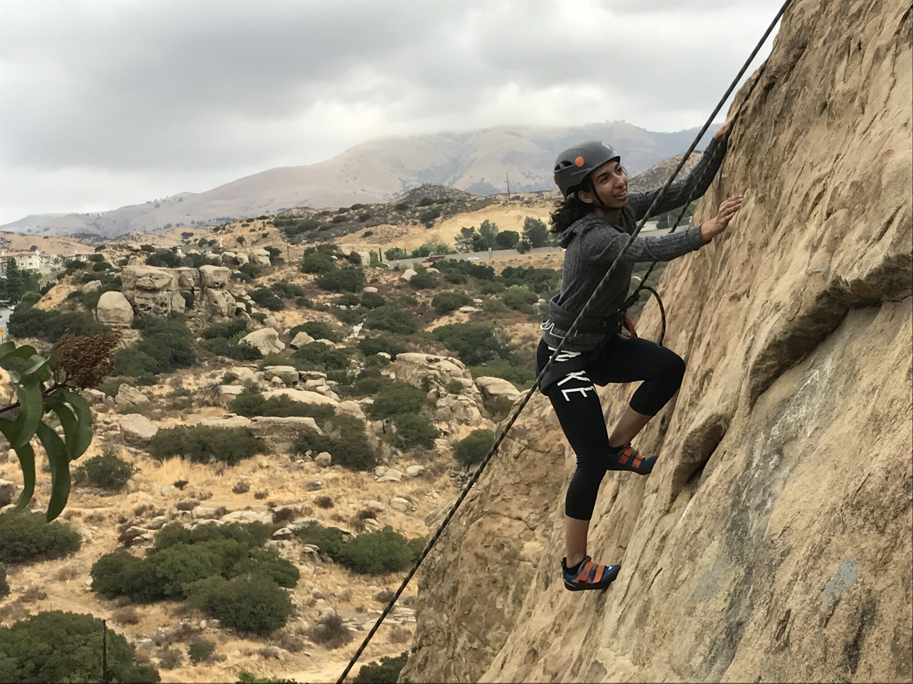
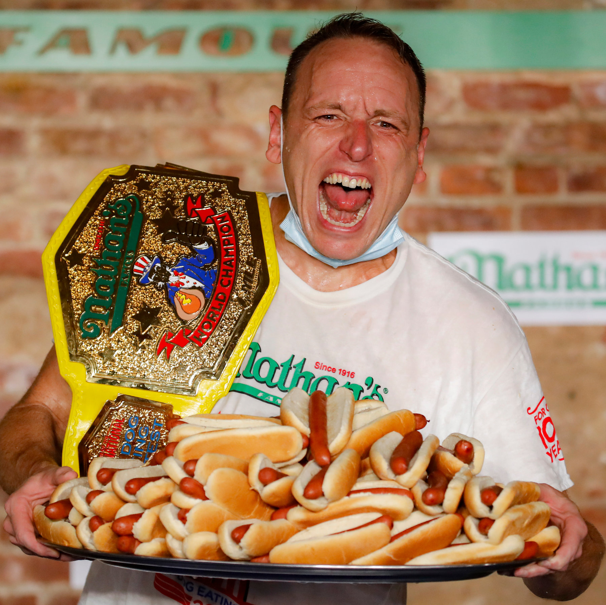

Core Skills
- Leadership
- Problem Solving & Critical Thinking
- Works Under Pressure
- Excellent Communication Skills
- Technical Knowledge in R and C++
Career Summary
| Position | Company | Location | Years | Responsibilities |
|---|---|---|---|---|
| Lead Project Manager | BBC | London, UK | 2022 - Present | Manage a team of developers and oversee the delivery of BBC applications |
| Software Engineer | Nike | San Francisco, USA | 2018 - 2022 | Developed Nike derived applications and games to assist with marketing sales |
Education and Qualifications
| Degree | Institution | Location | Years Attended |
|---|---|---|---|
| Bachelor of Science in Computer Science | Gonzaga University | Spokane, WA, USA | 2017 - 2021 |
| Master of Mathematics | Stanford University | Stanford, CA, USA | 2022 - 2024 |
Interests and Hobbies
-

Rock Climbing
I enjoy the challenge of scaling natural and artificial rock walls.
-

Hot Dog Eating Contest
I've been training to compete in the famous Nathan's Hot Dog Eating Contest.